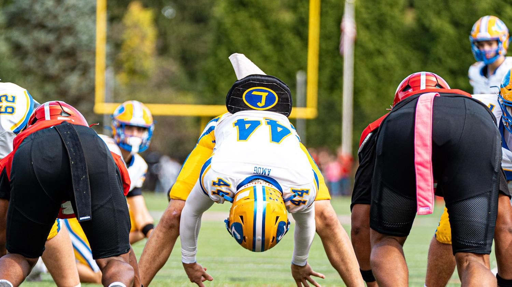
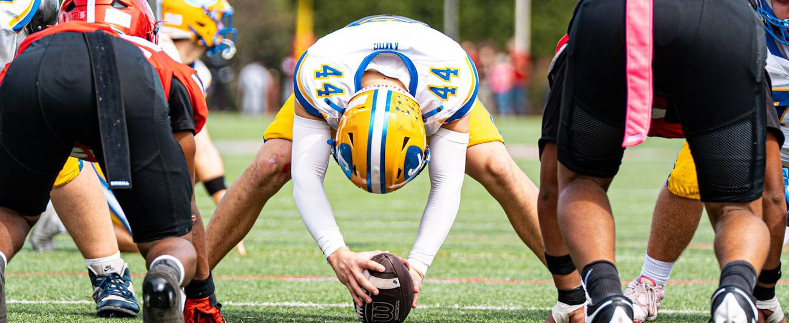
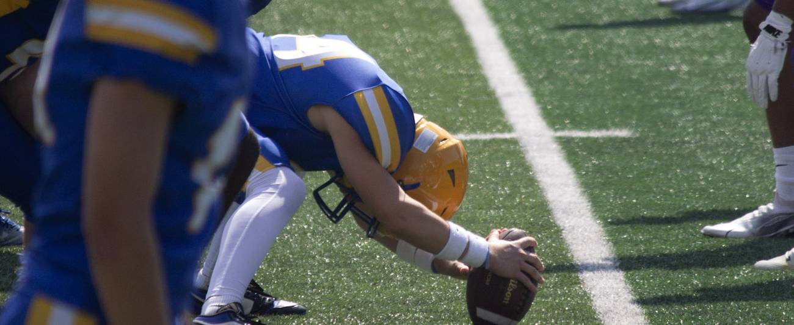
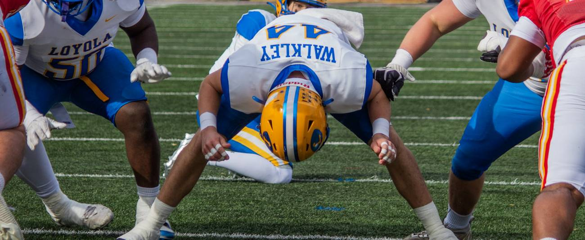

Videos
Video library
See it done right
Breakdowns of the drills, lifts, and exercises in the WSP program. Free for everyone.

An 8-week program, a snap timer, and research that shows its sources.
Also: ·
Interested in working with WSP? Tell us what you’re after.

The same 8-week strength and speed foundation runs under all three: mobility every day, lifts and sprint work on a weekly rotation. Only the skill days change.
Warm up thoroughly, then work up in confident singles to a new 1-rep max on each lift. Stop the moment a rep slows down or form breaks. That's the number to log, not the one after it. If you're new to a lift or under 18, work up to a heavy set of 3–5 reps and estimate your max from it instead of testing a true single.

Hand-timed snaps are unreliable. Film at 120 fps or higher, step through frame by frame, and enter two frame numbers. The app does the math and keeps your log.
Your log stays in this browser on this device. Export it to keep a copy or send it to your coach. On iPhone, add WSP to your Home Screen (Share, then Add to Home Screen) so Safari doesn’t clear the log after a week away.

Every claim is labeled by what kind of claim it is and how good the source is. Where the evidence is thin, we say so.
Long-snap research verified Sept 25–28, 2026. Punting, kicking, kickoff, injury, and rules research verified Oct 20, 2026.
Breakdowns of the drills, lifts, and exercises in the WSP program. Free for everyone.
Your maxes drive every @% in the program. Update them after test week and the numbers update everywhere. Saved in this browser only.
Tell us who you are, where you're at, and what you'd want to work on: 1-on-1 training, film review, or the online program. We'll reach out personally.
We kept what you typed last time.